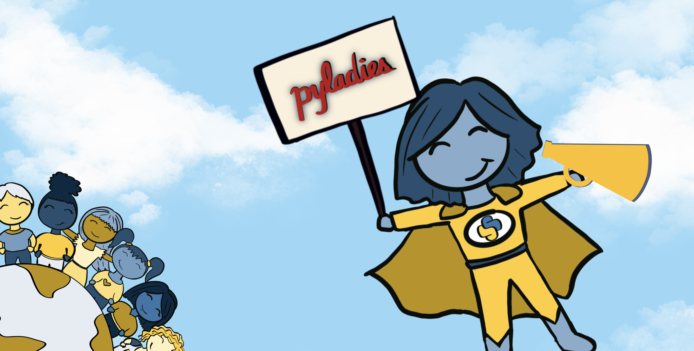

Welcome 👋¶
What This Project is About¶
This project focuses on building community-driven bots for Bluesky and Mastodon to support and grow the Python, R, and data community. The bots help by
- Boosting posts tagged with #pyladies or #rladies,
- Posting useful resources by PyLadies and R-Ladies,
- Sharing portraits of amazing women in tech, and
- Celebrating community achievements.
With these bots, I hope to give others an automated megaphone to increase visibility for underrepresented groups in the tech space.

Designed to increase engagement and visibility, the bots run automatically open-source tools. The project also provides a detailed, open guide for others interested in setting up similar bots. At its core, it’s about using automation to strengthen and connect our communities.
This projects marries multiple components:
- Sharing content by PyLadies and R-Ladies
- Sharing Amazing Women in Tech
Here is more about the project:
Blog Posts¶

Talks¶
Where can I find the bots?¶
You can find the bots on Bluesky (and formerly also on Mastodon). I'd love to extend it to other platforms - so if you have ideas, let me know!
Bluesky¶
-
PyLadies Bot
-
R-Ladies Bot


Mastodon¶
👋 Those bots are currently looking for a new home (i.e., an instance at Mastodon). If you know of something, please feel free to reach out!